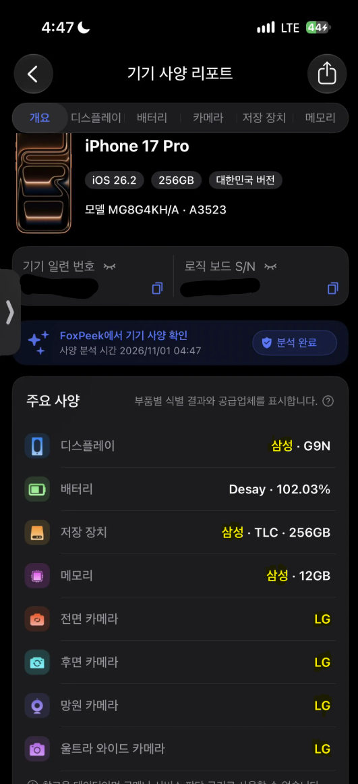
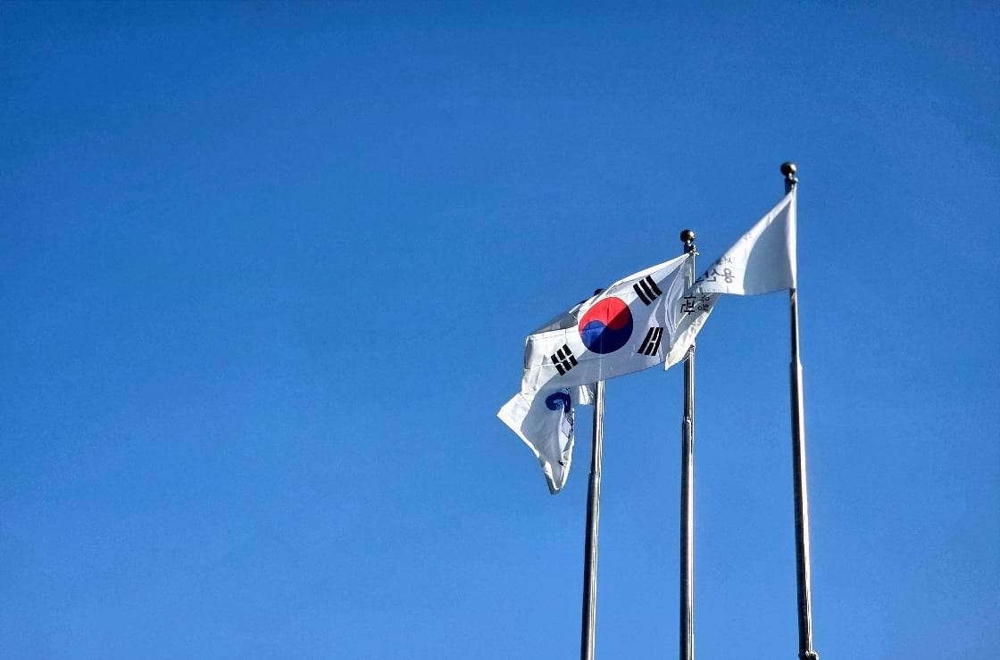

디스플레이 + 메모리는 삼성
카메라부품은 전부 LG
좆되는 신토불이폰ㄷㄷㄷㄷㄷㄷ


디스플레이 + 메모리는 삼성
카메라부품은 전부 LG
좆되는 신토불이폰ㄷㄷㄷㄷㄷㄷ

한국인인데 미국에서 유치원부터 학교 다닌거지 ㅋ
검머외 아니야? ㅋㅋ
금발벽안 소꿉친구 히로인 어흐
삼성폰은 중국산 넣나?
글쎄... a시리즈 제조사가 중국이어봐야 어차피부품 그래봐야 국내회사 한트럭인걸.
막말로 아이피타임 공유기같은거도 제조만 중국이지 부품은 대만,한국,미국임
엥? 공유기가 그렇게 기술력이 필요한가
이미 중국에서 자체 생산 가능한거 아님
잘못아는사실있는데. 공유기도 엄연히 기술력집약체임. 공유기들 이름뒤에 미디어텍 , 리얼텍 , 인텔 , 브로드컴 , 퀄컴 적혀있는거 본적있지? 전부다 대만 , 미국 무선 ap칩 제조사들임. 일반 모바일 soc의 ap 나 , 컴퓨터용 cpu랑 다르게, 무선 통신 신호 처리에 안정적으로 설계된 특화된 반도체 무선soc 칩들이지. 그 무선수신칩들 응용 바탕으로 공유기부터 노트북용 무선 수신칩 , 휴대폰 무선 수신칩 까지 전부다 사용이됨. 그리고 공유기안에는 위 ap회사들 뿐만아니라 플래시메모리 저장소 , 디램 메모리 반도체가 필수로 들어감 대부분 국내회사들 들어가지. 커패시터도 마찬가지고 그 좁쌀만한거 대부분 mlcc 한국인경우 많음.
확실한건 S나 폴드시리즈는 국내가 대부분에 메이드인베트남이 꽤 많이 차지할걸
완전 저가같은 경우는 중국 odm함
동급 s 시리즈는 국산 넣지. 저가형은 중국산도 많이 들어가고
펄럭
저래서 중국 디플회사 기술주면서 키워주고
중국 디램 넣으려고 발작하고
ㅋㅋㅋ
한국인이라면 아이폰 응원합시다!
뭐야 카메라 LG였어???????
LG이노텍
엘지가 새폰을 냈네 ㄷㄷ
엘지의 마지막 혁신
아이폰 어른폰
배터리는 중국인가
엘지폰은 죽어서 카메라를 남겼구나
+ 갬성
엘지는 부품도 많은데
한번 폰시장 도전해봐도 좋을듯.
막 파츠 교체형 이런거 하면 잘할거같음
저 기준이면 현기차는 사실상 반중국차..?
현기에 중국산 부품이 뭐가 들어감?
와이어링 하네스, 에어백 제어장치(ACU) 등등
중국산 부품 공급 끊겨서 현기차 생산라인까지 멈춘 적 있어 ㅋㅋㅋ
그럼 이와중에 42. 그지랄까지 난거네? 어휴
죽어도함께야
얼마나 부품 단가를 후려쳤을라나
삼성이랑엘지가 나스닥이였으면 애플따잇진작에햇을듯 ㅋㅋ
옛날에 아이폰은 혁신이라는게 뭔지 보여주던 기업이였는데... 에휴...
아이폰 존나 팔리면 삼성엘지도 많이 버는거 맞냐?
아니면 애플이 가격 존나 후려처서 별로 이익이 안되나
ㅈㄴ 후려쳤을듯
근데 워낙 판매량이 많으니 이익은 꽤 되지 않을까
스마트폰 나오고 아이폰 제조, 하청 맡은 폭스콘 혼자 매출100조이상 유지중(매출비중50%이상이 애플) 노키아 모토로라 등등 다 뒤질때 혼자 굳건하게 살아남음
우리나라 lg이노텍으로 보면 작년 매출 17조 중에 애플 비중이 80%고 애플이 먹여살린다고 해도 될 정도임
근데 원래 소프트웨어, 플랫폼 기업이 돈잘벌지 일반 제조업은 보통 영업이익 5%도 안되는 ㅈ밥임
lg이노텍은 영업이익 1.5%임
찾아보고 왔다...
삼디플은 매출에 애플 비중 40%고 영익이 14퍼임..
기업마다 원가, 수율, 설비투자 등 상황이 다르니 매출에 따른 영익은 일괄적으로 말할 순 없을거 같네
엘지는 애플 관련 납품사가 또 쪼개져 있어서 전체적인 매출 비중 파악이 힘들고
거기다 애플이 공급사 경쟁시키니까
아이폰 많이 팔린다고 크~~~~~게 돈 버는건 어려운게 맞는 듯
폭스콘은 최종조립업체니 부품공급사랑은 또 다르고
내가 이쪽 업계에서 일하는데 서로 단가 낮추면서 경쟁하기 보다는 어떻게든 애플한테 선택 받을려고 애플제품을 애초에 타겟해서 r&d함
애초애 이쪽 모바일 하드웨어가 애플 아니면 돈 아에안됨
애플에 채택 하나 되면 lg이노텍 같은 계열사 하나 뚝딱 생기는거지
지금은 아이폰 듀오 나오고 이제 여기 들어가는 필름 간택 당하고싶어서 두세기업들이 돈 때려박는중임
ㅋㅋㅋ ㅈ도 모르는애들이 저러는거임
애플 1차 하청만되도 진짜 매출 자릿수가 달라지는데
저런거 무시해도됨
애플 1차 하청만되도 중소에서 중견넘어갈수있음
소프트웨어는 애플이 다만든건가
아이폰 많이 사서 애국해라 ㅋㅋㅋㅋㅋㅋ
부품이 일본제라고 사실상 일본폰이라고 하던 시절도 있었는데
칩이 본체긴해
이제 칩만 탈환하면 흐흐
설계, 소프트웨어가 본체지 멍청한 글이네
그럼 엔비디아는 설계만하고 생산제조는 파운더리 tsmc, 삼성이 100%제조하니까 엔비디아도 한국꺼냐
태극기 할배들 같은거 아님? 몸은 신토불이 한국인인데 대가리 속은 MAGA인
카메라 이미니센서는 소니 광학계는 엘지인건가
cpu는?
긍데 애플 본체는 소프트웨어 아님?
금발벽안 한국인 같은 느낌인가